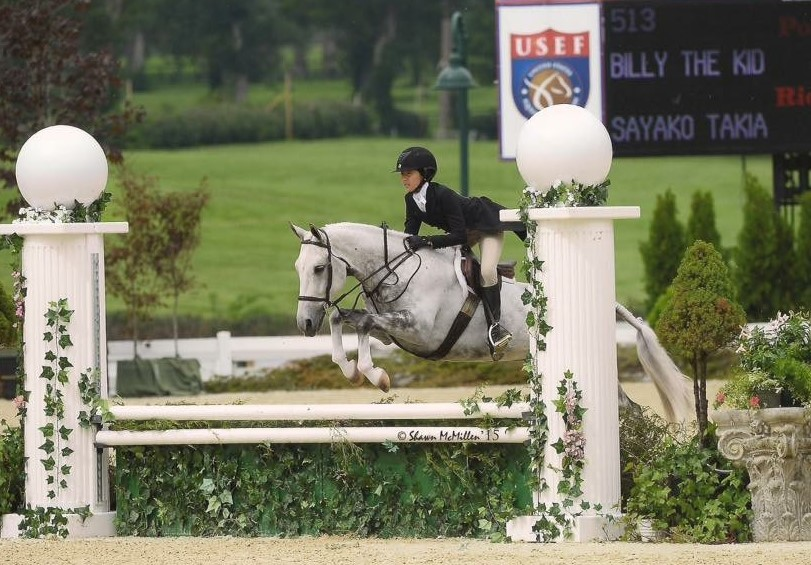

Billy
I competed in the children's pony, Large Green pony and Regular Large pony divisions with Billy. With Billy I qualified for Pony Finals in both 2015 and 2016. In 2015, we got 23rd out of over 85 entries in the Green Large Pony over fences. In 2016, we won the Hunter Jumper Association of Michigan Pony Medal Final.